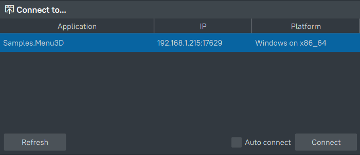
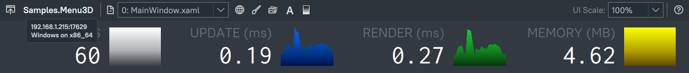
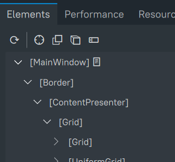
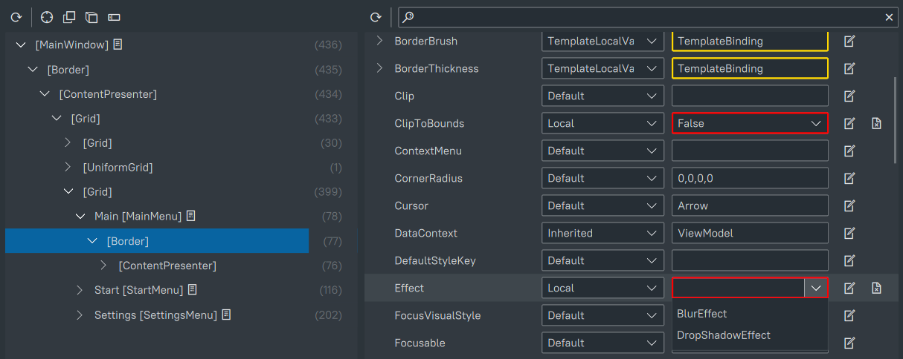
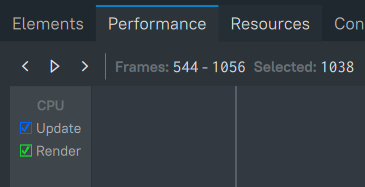
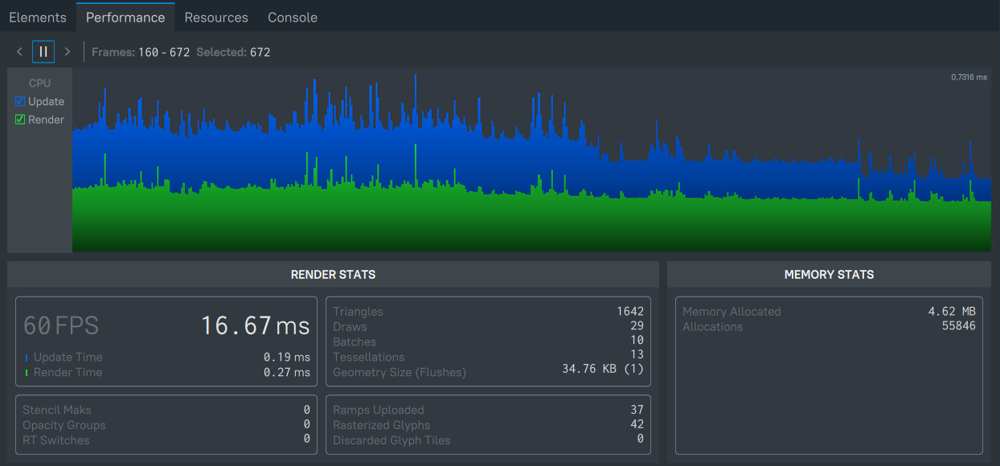
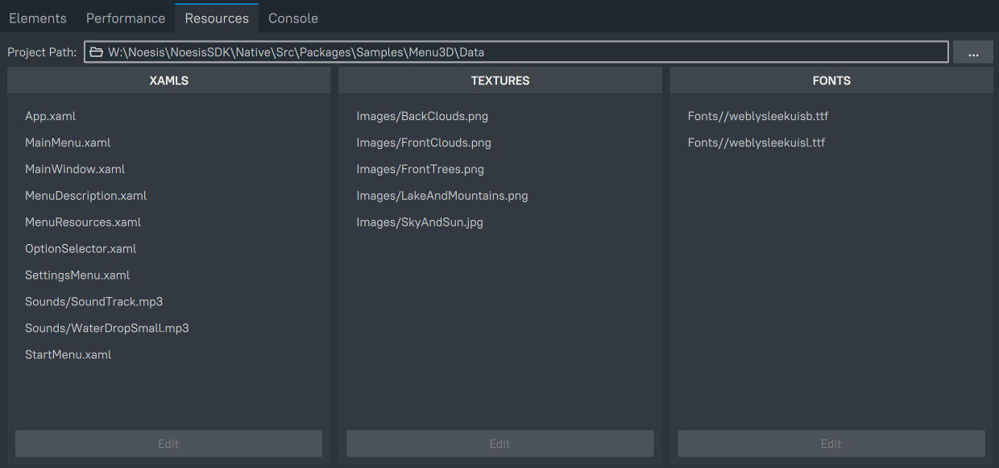
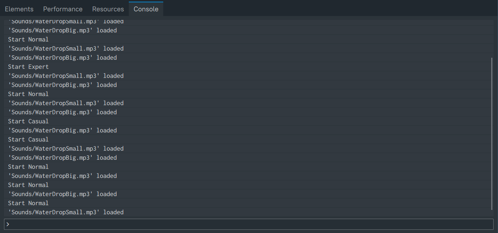

NoesisGUI Inspector
Inspector is a tool that allows the user to connect to a live instance of a NoesisGUI based application and observe and modify the state of the UI objects. It may help you track down problems in your application and iterate quickly by changing properties on the fly without having to restart your application.
Key features of Inspector are:
- Remote connection to Views.
- Global Performance Counters.
- Visual Tree inspection.
- Live Edit Values of objects in the tree.
- Frame performance stats.
- Hot Reloading of assets.
- Access to console.
NOTE
Inspector is only available in PRO licenses. It is a private download you get access to when acquiring a license
Getting started
To use the Inspector within your application a instrumented Noesis library is necessary. By default, the libraries includes in our public SDKs are instrumented and compatible with Inspector. Inspector is enabled by default and it can be disabled before initializing Noesis by calling Noesis::GUI::DisableInspector().
NOTE
We do not recommend distributing official releases of your application with instrumented Noesis library
When the application to be inspected launches, it should appear on the Connect to... dialog on the Inspector.
Once you select a target application a connection will be established and you are ready to start inspecting it.
If Auto connect was selected, Inspector will automatically reconnect to any application launched on the same IP without going back to the Connect to... dialog. This is very useful if you are working on your application and need to restart it several times.
NOTE
Make sure your application keeps rendering even without focus when the Inspector is connected. The function 'Noesis::GUI::IsInspectorConnected()' can be used for this purpose.
Inspector layout
Once a connection is established, you'll be presented with the UI of the Inspector. The top part of the window is always the same, and consists of a minimal toolbar, and a set of high level performance graphs.
The toolbar allows you to select a new target in the Connect to... dialog, and it displays the information of the currently attached target: the name of the application, the IP address of the target and the platform. It also contains a drop down list with all the Views in the current target, as well as buttons that let you toggle some debug visualization settings: Wireframe, Batches, Overdraw, and Glyph and Gradient Texture Overlays.
The overall performance graphs allow to see at a glance how your application is performing, by displaying the frames per second (the inverse of the frame time), update and render times, as well as the amount of memory that NoesisGUI is using at the moment.
Under these graphs there are a series of tabs: Elements, Performance, Resources and Console. Their utility will be described in the following sections.
Elements tab
The element tab allows to inspect the Visual tree and the properties of its nodes, as well as modifying said properties values.
On the left you have the Visual tree panel. It displays the hierarchy of Visual nodes of the selected View. For each node you can see its name (if it's got any), its type between square brackets, and the number of nodes under it on the right. Additionally, if the node was created from a XAML, a link to it is provided. Please, read the Resources tab section for more information about how to edit and reload resources on the fly.
You can select a node in the Visual tree to inspect its properties. You can do so by clicking on it directly on the tree, or you can use one of the other two selection options offered. By enabling Mouse Selection, you can select an element directly on your application. The element currently under the cursor will be highlighted with a red border, and you can click on it to select it. Or you can choose to Track the focused element of your application, in which case the element that has the focus will be selected in the Visual tree as you interact normally with your application. The other two buttons let you turn on visualizations for some of the layout properties of the selected node: you can toggle the visualization of the Padding and Margin by clicking on Display Layout Adorners, and you can visualize the bounding box of the subtree under the selected node by clicking on Display Subtree Bounds. The refresh button synchronizes the contents of the tree with the current state of the application.
Once a node is selected, its properties will be displayed on the Properties tree. The properties are sorted alphabetically, and you can filter them using the filter text box at the top. For each property its name and all of its values are displayed. A property may have multiple values from different value providers with different priorities. By default, the actual value of the property, that with the highest priority, is displayed. But you can inspect them all by using the Provider drop down lists in the middle column. The highest priority, active value is displayed with a white font, while lower priority values that have been overridden by higher priority ones will be shown with a red font. If a value is an object or a collection you can inspect its contents hierarchically. Borders of different colors signal different types of values: a light blue border indicates a frozen value; Bindings have a gold colored border; and finally resources have a green border.
You can also modify those values on the fly, by clicking the Edit Local Value button. When editing a property, a red border is placed around the text box that signifies that the value displayed didn't come from the application, but instead is still local to the Inspector. You can then type the value or select it from the drop down list for enumerations, objects or booleans. Press return to set the value, or escape to cancel the edition. You can also remove the currently set local value for the property by clicking on the Clear Local Value button. If the value is a collection, you can add new items to it with the Add new item button, or remove each one individually. Some values are nodes of the Visual tree, and by clicking on the Go to source button you can jump straight to them on the Visual tree.
The value for a property can be any string that can be converted to the type of the target object. For example, you can write Red when editing a property of type Brush, and that will create a SolidColorBrush with its Color property set to #ffff0000.
Performance tab
This tab shows more in depth performance information about each buffered frame of your application. At the top you have the performance graph, which displays the update and render times for each frame. You can click on the graph to select a single frame, and then use the arrow buttons to move to the previous and next frames. When a frame is selected, the graph stops updating automatically, but you can stop it first by clicking on the pause button. If you want to resume updating, click the play button. You can select which times are shown using the color coded check boxes on the left.
The bottom panel shows information about the selected frame, or the average of the last second of run time if none is selected. On the left you have rendering statistics: you have the frames per second and its inverse, the frame time, and also the update and render times for that particular frame. To the right you have information related to the drawing of the frame: the number of triangles drawn, the number of primitives drawn, how many batches were submitted to the GPU, the total number of paths tessellated (and the delta from the previous frame), and the total size of the buffers submitted to the GPU (and the number of submissions required). Under that, you can find information related to some of the textures NoesisGUI uses internally: the total number of gradients updated, glyphs rasterized and discarded from the glyph cache, as we as the deltas from the previous frame between parentheses. Finally, on the left, you can see the number of stencil buffer masks, opacity groups and render target switches that were required for the selected frame.
The right hand side panel shows the total amount of memory allocated at the moment, as well as the number of allocations requested. While the render stats apply only to the selected View, the memory stats refer to all the NoesisGUI objects in the application.
Resources tab
The resources tab displays lists of resources currently loaded by you application through the different types of providers: XAML, Texture and Font.
At the top of there's an address bar where you can type or browse for the project directory on your computer. This will be used, along with the URIs, to open the asset files from your computer. Just set the project path, and either double click or select and click Edit and your default program will be used to open the selected file. You can then edit and save the file, and the new contents will be Hot Reloaded on the target application.
Console tab
The console tab displays the output of the target application, and also allows you to run commands on the target application using the command prompt at the bottom.
Table of Contents